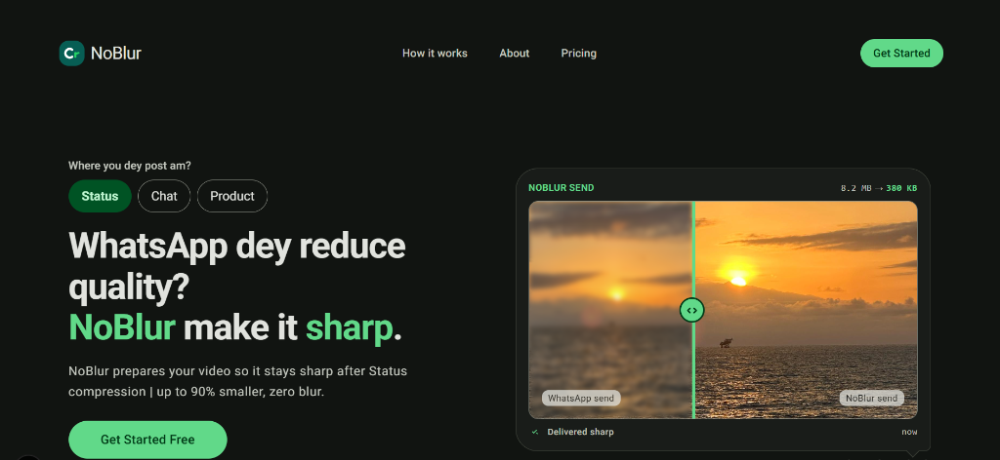
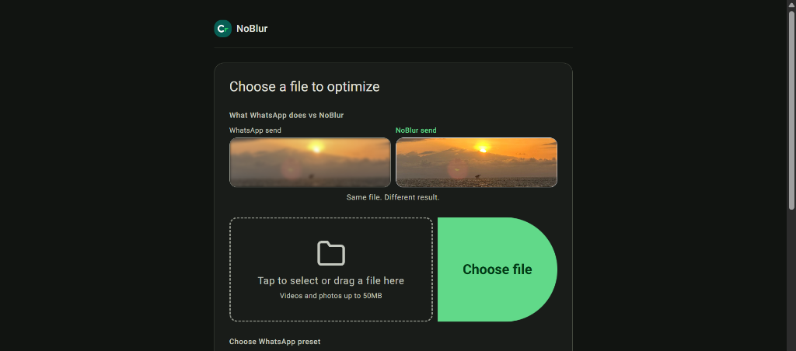
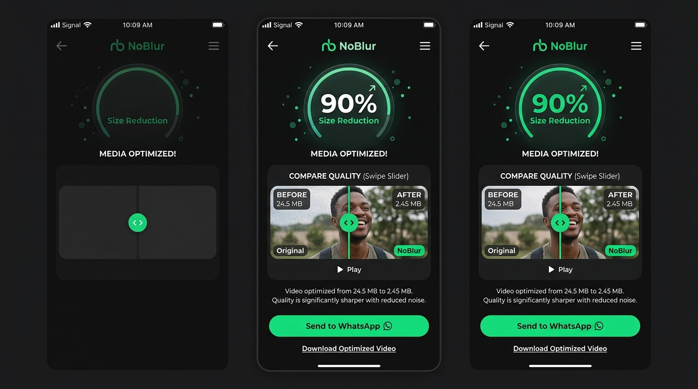
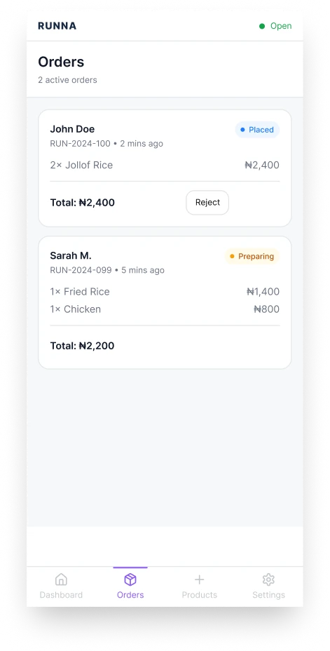
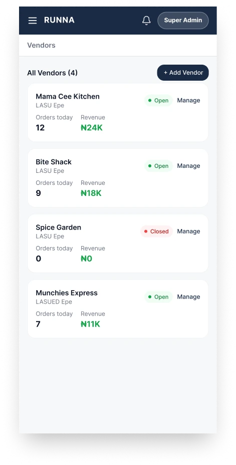
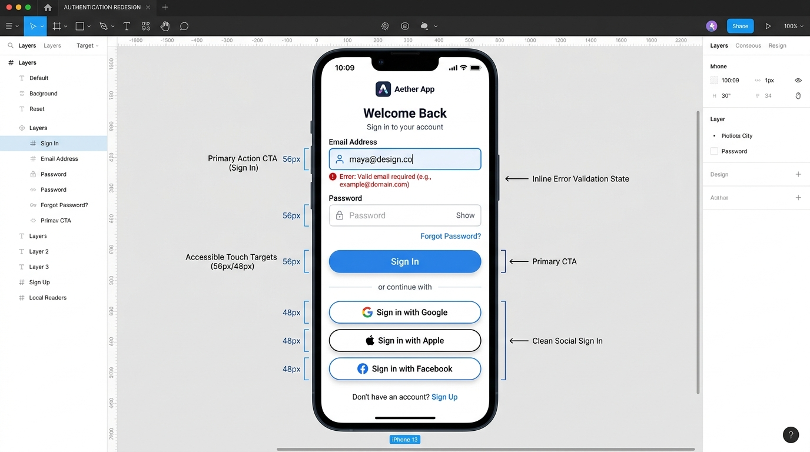
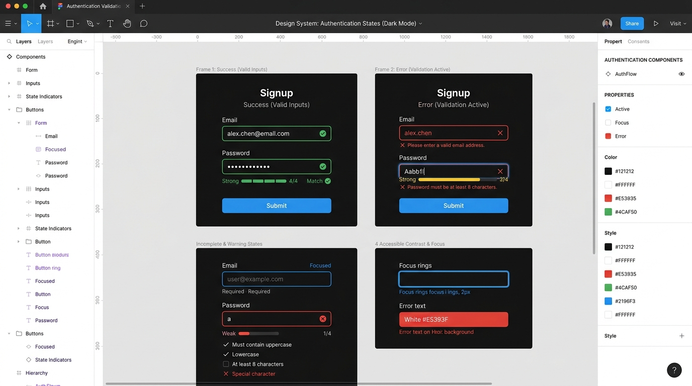

Mobile PWA & Media UX
NoBlur
A mobile-first media pre-optimizer engineered to make videos and photos survive WhatsApp compression.

Product designer focused on AI-native SaaS, workflow automation, and scalable UX architecture.
Deep-dive product design case studies exploring media optimization PWA, marketplace UX, and heuristic accessibility audits.
I'm a product design student at LASU, driven by a conviction that the best AI products are invisible: not because they're hidden, but because they feel obvious. I design workflows that reduce cognitive load, dashboards that surface insight without noise, and systems that respect the user's attention as the scarcest resource.
My approach combines systems-level thinking with hands-on prototyping: I map the full ecosystem before opening Figma, and I validate interaction patterns through low-fidelity tests before committing to pixels. I'm equally comfortable discussing API architecture as I am refining a micro-interaction easing curve.
Right now, I'm exploring how AI-native UX patterns can transform productivity tools, and looking for a team where I can contribute, learn, and ship.
LASU
B.Sc. Electronics & Computer Engineering (Expected 2027)
HNG Internship
Product Design Intern (2026) · UI/UX Bootcamp
Open to internships & junior product design roles
WhatsApp aggressively re-compresses photos and videos sent via Chat or Status, causing visible artifacts, blur, and color banding. Online sellers and content creators losing visual quality have no technical visibility or control over WhatsApp's compression algorithm.
Discovery & Benchmarking
Audited WhatsApp's re-compression thresholds (720p/480p caps, 90s status ceilings, bitrate ladders); mapped online seller workflows
Define & Smart Defaults
Scoped zero-friction MVP with 3 core presets (Status, Chat, Product) and automated resolution/bitrate matching with no complex sliders
Interaction Design
Designed an intuitive 3-tap upload-to-optimize flow, interactive before/after visual proof slider, and goal-gradient progress indicator
Figma to PWA Prototype
Prototyped mobile-first dark UI with 1-tap "Send to WhatsApp" sheet integration and resilient offline/resumable upload states


AV1 adaptive scene profile analysis (face/text detection) · Batch upload for power sellers · PWA background sync for low-connectivity environments
Students and vendors at university campuses rely on chaotic informal group chats for food orders with zero live order tracking, inventory sync, or structured delivery coordination.
End-to-end product design: multi-role user journeys (Customers, Runners, Vendors, Admins), information architecture, operational dashboards, and interactive prototypes.
Discovery
Researched campus food ordering workflows at LASU; mapped pain points across 4 distinct operational user roles
Define
Scoped multi-role journeys: Customer (order/track), Runner (dispatch), Vendor (kitchen), Admin
Design
Designed mobile-first student ordering alongside runner dispatch flows and vendor inventory management panels
Prototype
Built interactive component prototypes; validated 3-step checkout and live order status tracking with LASU students


Real-time campus runner GPS tracking · Automated dispatch batching · PWA push notification alerts
FlutterFlow's authentication system suffered from critical mobile CTA obstruction, cluttered desktop error density, and heavy social-auth blocks that pushed primary email sign-in below the fold, creating friction and drop-off risks at a crucial trust point.
Discovery & Scope
Audited 4 core auth states (Sign Up, Login, Error Validation, Valid State) across desktop and mobile screen viewports
Heuristic Evaluation
Evaluated against Nielsen Norman Group's 10 Usability Heuristics; identified 4 severe visual hierarchy and error density bottlenecks
WCAG 2.2 Audit
Assessed touch targets (2.5.8), error identification (3.3.1), and cognitive load in accessible authentication (3.3.8)
Figma Redesign
Redesigned auth cards with unobstructed mobile CTAs, streamlined social sign-in, and structured error state spacing


Passkey & WebAuthn passwordless authentication support · Live validation toast & snackbar status announcements · A/B conversion testing on social vs email layout
I'm actively seeking internship and junior product design roles for 2026–2027. If you're building AI or SaaS products and value systems thinking, let's talk.